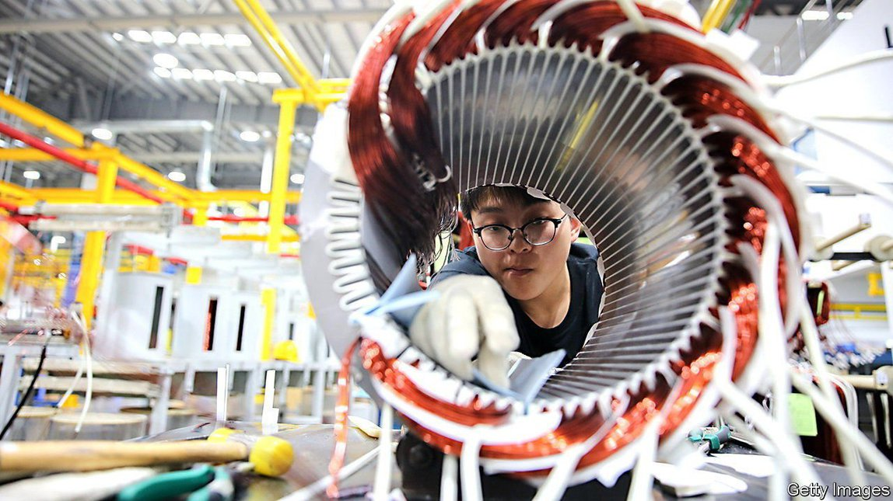
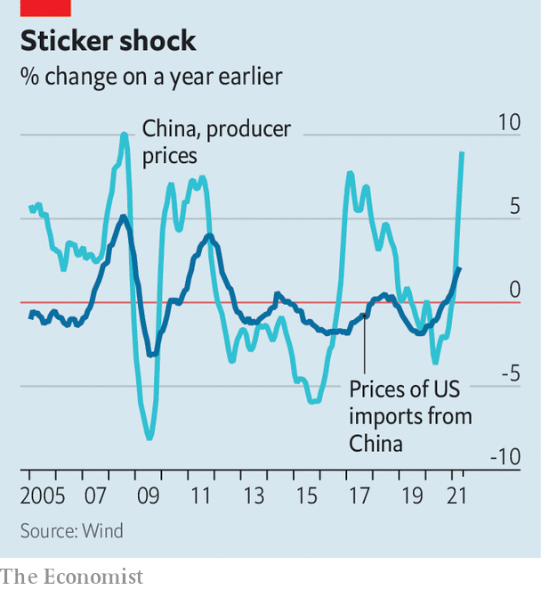
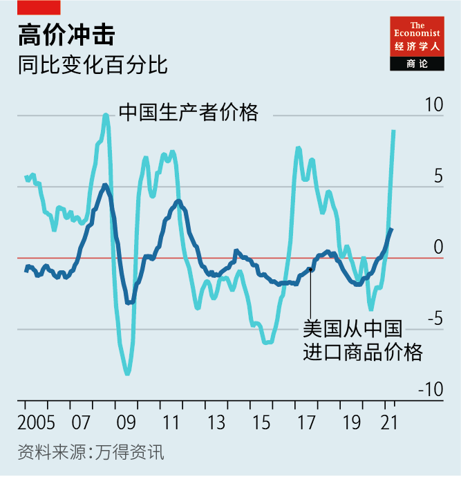

Text
2021-06-16T14:28:30+00:00
Paid in China
中国内部承担
中國內部承擔
Soaring factory prices in China add to global inflation fears
中国出厂价飙升加剧全球通胀忧虑
中國出廠價飆升加劇全球通脹憂慮
Long a source of cheap goods, is China now exporting higher prices?
一直是廉价商品来源的中国如今在输出高价？
一直是廉價商品來源的中國如今在輸出高價？
ERIC ZHU, an international sales manager at a Chinese forklift-maker, has just sent his second letter of the year to customers, explaining that prices are going up once again. “We need to share some of the price increases with our partners. We cannot absorb them all ourselves,” he says. “The world is crazy now.” Although not standard economics terminology, crazy is a good description for the price movements now coursing through global markets. Inflation in America is running at its fastest since 2008. Energy and commodity prices have soared. And as Mr Zhu can attest, investors and company bosses are worried that China, the world’s workshop, is itself starting to export inflation.
中国一家叉车制造商的国际销售经理埃里克·朱（音译）刚刚给客户发出了今年第二封信，对再一次涨价做解释。“我们需要合作伙伴分担一部分价格涨幅。我们没法全部自己承担，”他说，“目前的市道太疯狂了。”虽然不是一个标准经济学术语，但“疯狂”的确很好地描述了眼下全球市场上的价格趋势。美国的通胀增速为2008年以来最高。能源和大宗商品价格飙升。而就像朱先生可以证明的那样，投资者和公司老板们都担心中国这个世界工厂本身开始输出通胀。
中國一家叉車製造商的國際銷售經理埃里克·朱（音譯）剛剛給客戶發出了今年第二封信，對再一次漲價做解釋。“我們需要合作夥伴分擔一部分價格漲幅。我們沒法全部自己承擔，”他說，“目前的市道太瘋狂了。”雖然不是一個標準經濟學術語，但“瘋狂”的確很好地描述了眼下全球市場上的價格趨勢。美國的通脹增速為2008年以來最高。能源和大宗商品價格飆升。而就像朱先生可以證明的那樣，投資者和公司老闆們都擔心中國這個世界工廠本身開始輸出通脹。
It is easy to see why people are concerned. On June 9th China reported that factory-gate prices rose at an annual rate of 9% in May, the highest in more than a decade. That, along with soaring shipping costs and a stronger yuan, will probably push up the prices of made-in-China goods, from phones to futons. America’s imports from China already cost 2.1% more in April than they did a year ago, the fastest rise since 2012 (see chart).
不难看出人们为何担忧。6月9日，中国公布的数据显示5月工业生产者出厂价格同比增长9%，为十几年来最高。再加上运输成本飙升和人民币汇率走高，从手机到沙发床的中国制造商品的价格都很可能被推高。美国从中国进口的商品在4月已同比涨价2.1%，是自2012年以来最快的增幅（见图表）。
不難看出人們為何擔憂。6月9日，中國公布的數據顯示5月工業生產者出廠價格同比增長9%，為十幾年來最高。再加上運輸成本飆升和人民幣匯率走高，從手機到沙發床的中國製造商品的價格都很可能被推高。美國從中國進口的商品在4月已同比漲價2.1%，是自2012年以來最快的增幅（見圖表）。
Yet the danger of China-exported inflation can be overplayed. Only part of the rise in China’s producer prices reflects domestic causes. Its strong economic recovery was led by investment in homes and infrastructure, which pushed up the price of steel. In order to meet green targets, the government has reined in both coal and steel production. Officials have also vowed to crack down on “excessive speculation” in domestic commodity futures, suggesting that this helped the run-up in prices.
但是，中国输出通胀的风险有可能被高估。中国生产商价格上升只有一部分是源于国内因素。中国强劲的经济复苏是由房地产和基建投资带动的，这推高了钢材的价格。为实现环保目标，中国政府已经在限制煤炭和钢铁生产。官员们还誓言要打击国内大宗商品期货市场的“过度投机”，暗示这也是推动价格上涨的因素之一。
但是，中國輸出通脹的風險有可能被高估。中國生產商價格上升只有一部分是源於國內因素。中國強勁的經濟復蘇是由房地產和基建投資帶動的，這推高了鋼材的價格。為實現環保目標，中國政府已經在限制煤炭和鋼鐵生產。官員們還誓言要打擊國內大宗商品期貨市場的“過度投機”，暗示這也是推動價格上漲的因素之一。
Most of the price pressures instead reflect the peculiarities of the covid-clouded world. The global demand for consumer goods—things you can buy online while confined at home—has soared. Chinese exports are about 20% higher than their pre-pandemic trend, and factories have struggled to keep up with orders. Disruptions to global commodity supplies, such as lockdowns that limited copper mining in Chile and Peru, have also pushed up prices.
实际上，这波价格压力主要反映了全球在疫情阴影下的特殊现状。全球对消费品（人们困居家中之时仍可从网上买到的物品）的需求飙升。中国出口量比疫情前高约20%，工厂产能难以跟上订单。全球大宗商品供应受到疫情干扰，例如智利和秘鲁的铜矿开采因封城而受限，也推高了价格。
實際上，這波價格壓力主要反映了全球在疫情陰影下的特殊現狀。全球對消費品（人們困居家中之時仍可從網上買到的物品）的需求飆升。中國出口量比疫情前高約20%，工廠產能難以跟上訂單。全球大宗商品供應受到疫情干擾，例如智利和秘魯的銅礦開採因封城而受限，也推高了價格。
Rather than transmit the shock, Chinese companies have absorbed much of it. Compared with the end of 2019, before covid-19 upended the world, factory-gate prices in China have risen by nearly 6%. But an index measuring the cost of manufactured consumer goods in China went up by just 0.6%. Companies have had to get by with thinner margins. No wonder Mr Zhu wants to share the pain with customers.
中国的公司没有传输这种冲击，而是自己吸收掉了大部分。相比2019年底，也就是疫情还没有让世界天翻地覆的时候，中国的出厂价已经上涨了近6%。但一个衡量中国产消费品成本的指数仅上升了0.6%。企业不得不靠着缩水的利润撑下去。难怪朱先生希望客户能分担一些痛苦。
中國的公司沒有傳輸這種衝擊，而是自己吸收掉了大部分。相比2019年底，也就是疫情還沒有讓世界天翻地覆的時候，中國的出廠價已經上漲了近6%。但一個衡量中國產消費品成本的指數僅上升了0.6%。企業不得不靠着縮水的利潤撐下去。難怪朱先生希望客戶能分擔一些痛苦。
Moreover, the policy environments in China and America are very different. Whereas the Federal Reserve eased monetary policy dramatically, the People’s Bank of China was much more conservative. It has cautiously begun tapering its support. This may help explain the divergence between the two countries’ inflation trajectories. In America, the Fed’s preferred measure of “core” consumer prices, excluding food and energy, rose by 3.1% year-on-year in April, the most since 1992. In China, the core index rose by just 0.9% year-on-year in May. (China’s farmers have also helped quell inflation. A recovery in pig stocks after an outbreak of African swine fever has brought pork prices down by nearly a quarter compared with last year.)
另外，中美两国的政策环境大相径庭。美联储大幅放宽货币政策，而中国人民银行则保守得多。后者已开始谨慎地缩减支持。这可能有助于解释两国通胀走势的差异。在美国，美联储惯用的“核心”消费价格（不包括食品和能源）指数在4月同比上升3.1%，是1992年以来最大的增幅。在中国，5月的核心价格指数仅同比上升0.9%。中国农民也对平抑通胀起了一定作用。生猪生产已从非洲猪瘟的影响中恢复，令猪肉价格比去年下降了近四分之一。
另外，中美兩國的政策環境大相徑庭。美聯儲大幅放寬貨幣政策，而中國人民銀行則保守得多。後者已開始謹慎地縮減支持。這可能有助於解釋兩國通脹走勢的差異。在美國，美聯儲慣用的“核心”消費價格（不包括食品和能源）指數在4月同比上升3.1%，是1992年以來最大的增幅。在中國，5月的核心價格指數僅同比上升0.9%。中國農民也對平抑通脹起了一定作用。生豬生產已從非洲豬瘟的影響中恢復，令豬肉價格比去年下降了近四分之一。
Taking a longer view, some analysts think that China’s ageing population will transform it into an inflationary force. In the early 2000s, China’s low wages helped make consumer goods cheap around the world. That suggests that shrinking labour supply and rising wages should have the opposite effect. Yet this is not so clear-cut. Low-end manufacturing is already moving to cheaper places like Vietnam and Bangladesh, while a rapid increase in automation in China has also helped restrain prices.
更长远来看，一些分析师认为人口老龄化将使中国成为推高通胀的力量。在21世纪初，中国的低工资帮助全世界用上了廉价消费品。这么说起来，劳动力供应萎缩和工资上涨应该会令消费品价格上涨。然而事情并不是这么绝对的。低端制造业已逐渐向越南和孟加拉国等成本更低的地方转移，而中国自动化程度的迅速提高也帮助抑制了价格上升。
更長遠來看，一些分析師認為人口老齡化將使中國成為推高通脹的力量。在21世紀初，中國的低工資幫助全世界用上了廉價消費品。這麼說起來，勞動力供應萎縮和工資上漲應該會令消費品價格上漲。然而事情並不是這麼絕對的。低端製造業已逐漸向越南和孟加拉國等成本更低的地方轉移，而中國自動化程度的迅速提高也幫助抑制了價格上升。
Now, though, the pressing question is whether China’s input-price inflation will be transitory or more enduring. The answer lies outside China. As the vaccine roll-out gains traction and something closer to normal life resumes in America and Europe, people are likely to spend more on services such as tourism and eating out, not just on goods bought online. That would ease the pressure on commodities and, by extension, on China’s factories. ■
而眼下紧迫的问题是，中国的投入价格上涨是暂时的还是会更持久。答案取决于中国之外的因素。随着疫苗接种的铺开，欧美在一些方面逐渐接近恢复正常生活，人们很可能在旅游和外出就餐等服务上消费更多，而不仅仅是在网上买东西。这将缓解对大宗商品的压力，进而缓解中国工厂承受的压力。
而眼下緊迫的問題是，中國的投入價格上漲是暫時的還是會更持久。答案取決於中國之外的因素。隨着疫苗接種的鋪開，歐美在一些方面逐漸接近恢復正常生活，人們很可能在旅遊和外出就餐等服務上消費更多，而不僅僅是在網上買東西。這將緩解對大宗商品的壓力，進而緩解中國工廠承受的壓力。